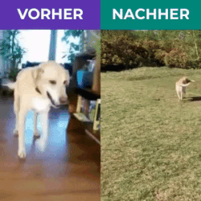
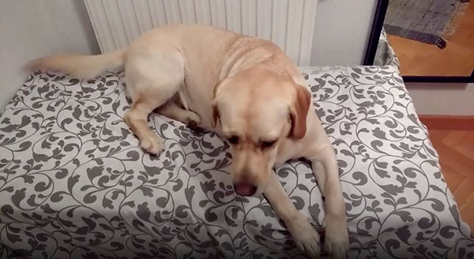
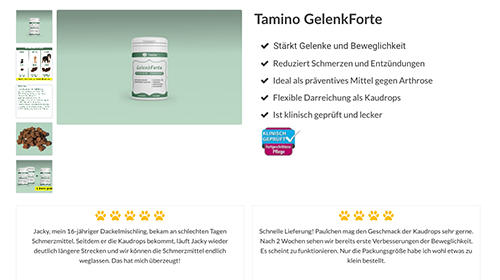
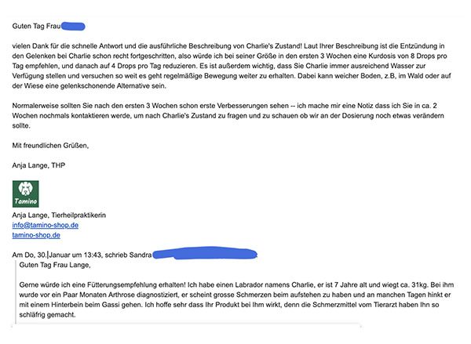
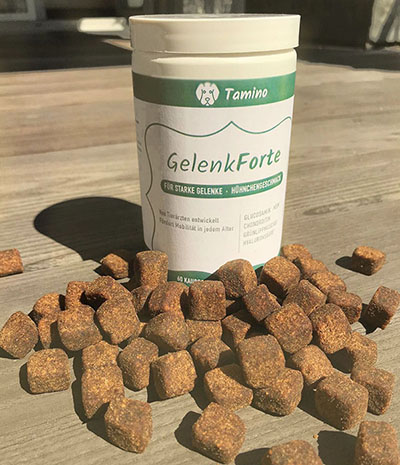

Bei meinem Labrador Charlie wurden mit 7 Jahren Gelenkschwund und Arthrose diagnostiziert. Ich werde den Tag beim Tierarzt nie vergessen, denn es kam wie ein Schock und ich machte mir solche Vorwürfe: Was hatte ich nur falsch gemacht? Wie konnte ich es zulassen, dass mein liebster Charlie solche Schmerzen hatte?
Hier erzähle ich die Geschichte, wie Charlie zuerst von einem Tierarzt mit Chemiekeulen betäubt wurde und ich dann ein natürliches Mittel fand, sodass er heute wieder fast wie der junge Charlie rumtobt!
Es kam ganz schleichend, aber irgendwann merkte ich, dass er beim Gassi gehen schmerzen hatte und leicht hinkte. Er wollte nicht mehr so recht aufstehen und lag viel öfters auf dem Hausflur.
Bei der Diagnose verschrieb der Tierarzt ein Schmerzmittel und gab Ihm eine Cortison Spritzte. Die Schmerzen schienen zwar weg zu sein, aber seine Lebensfreude litt darunter dramatisch. Charlie war die ganze Zeit unglaublich schläfrig und apathisch.
Nach einigen Wochen wollte und konnte ich das nicht länger mit ansehen und beschloss, der eigentlichen Ursache auf den Grund zu gehen: Ich setzte das Schmerzmittel bei Charlie wieder ab und machte mich im Internet über verschiedene Naturheilmittel schlau. Dabei stieß ich auf eine Marke namens Tamino. Sie vertreiben online Kaudrops, die alle wirksamen Zutaten für die Gelenkstärkung in einem Mix kombinieren.
Diese Nahrungsergänzungsmittel enthalten Glucosamin, Chondroitin, neuseeländische Grünlippmuschel, MSM, südamerikanische Yucca Wurzel, und südindische Boswelia Serrata sowie Zinc und Vitamin E.
Ich bestellte eine erste Probierpackung über den Tamino Webshop zum Preis von EUR 24,90, welche sehr schnell bei mir zuhause ankamen. Außerdem war der Kundenservice von Tamino noch super hilfreich - mir antwortete direkt die Tierheilpraktikerin und beriet mich mit der optimalen Dosierung für meinen leidenden Charlie.
Die Kaudrops sahen aus wie ganz normale Leckerlis, mit Hühnchengeschmack. Und dann kam der Test: Wird Charlie sie fressen? Er ist für einen Labrador recht wählerisch… und ja, hat sie sofort weggeputzt.
Mein anfänglichen Bedenken
Taugen die Tamino Gelenkdrops etwas für den Preis (damals 24,90 €)? Werden Sie bei Charlie wirken? Es sind nun schon 12 Wochen vergangen, seitdem ich die Kaudrops zum ersten mal fütterte und ich bin wirklich erstaunt. Sie wirken tatsächlich sehr gut!
Mein Fazit:
Nach 3 Wochen sah ich erste Veränderungen - er konnte problemlos aufstehen und schien auch viel aktiver zu sein. Nach der 6. Woche sah ich einen komplett belebten Hund - er wollte beim Gassi gehen sogar wieder Stöckchen spielen. Die benachbarten Hundehalter fragten mich schon, ob ich mir einen zweiten Labrador angeeignet hatte!
Für Charlie sind die Tamino Kaudrops wie ein Wundermittel, und wirken ganz ohne Chemiekeule. Ich hätte nie gedacht, dass es so etwas gibt. Sie sind zwar auf den ersten Blick etwas teuer (ca. 1 Euro pro Tag), aber für mich jeden Cent wert! Ganz ohne Pharmazeutika hat er seine Lebensfreude wieder gefunden.
Hier Kaufen*Partnerlink